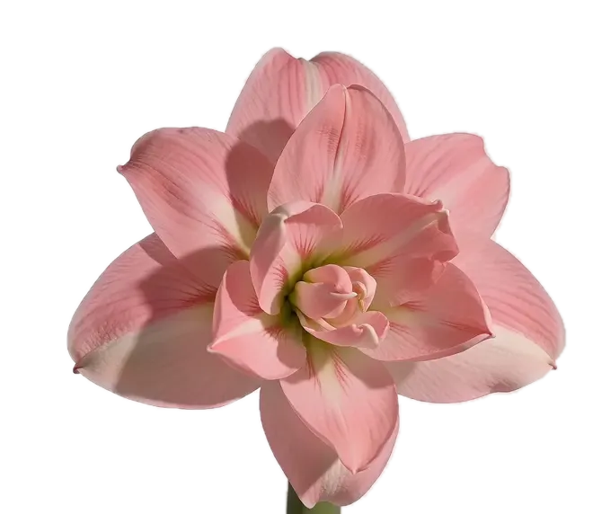
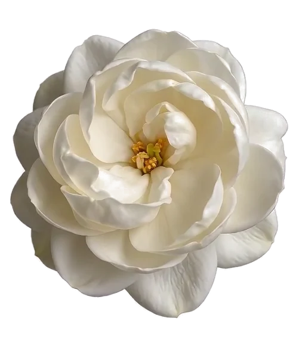
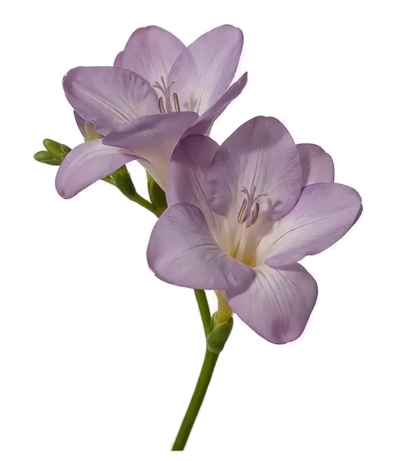
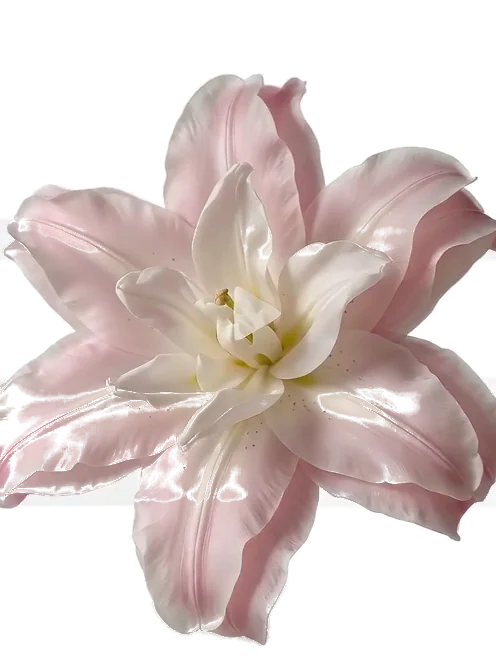
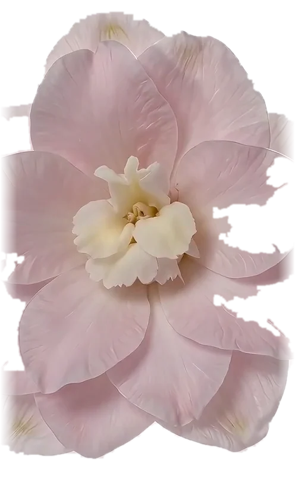

FLORA / COLLECTION
The
collection.
五个花种，每组 29 帧，从花苞到盛开。卡片上的三种颜色不是配色方案，是每朵花盛开那一帧里真正出现最多的三个颜色（去掉背景后按饱和度筛出）。点卡片上的「在花开页查看」，会直接打开对应的花种。
05花种 SPECIES
29每朵帧数 FRAMES
145分帧总数 TOTAL
2.9MB素材体积 WEBP
30fps手势推理 UPPER LIMIT




NOTES关于这套花集
五组影像各自独立取色：山茶的瓣色偏冷，去掉背景后剩下的多是奶油白与花心的金；芍药的花瓣面积最大、色相最散，取色时会带出灰粉；香雪兰的紫是花瓣本身的花青素色，与南非冬季降雨区的强光照有关。
每朵花的分帧都是 00 = 盛开、28 = 花苞，中间是连续过渡。也就是说手势给的「张开度」越高，看到的帧号越小——手掌完全张开时是第 0 帧。
还可以上传自己的花：花开页底部的「上传花朵」支持透明底 PNG / WebP，上传后同样用手掌开合控制大小；那朵花不会进入花集，只在当前页面生效。